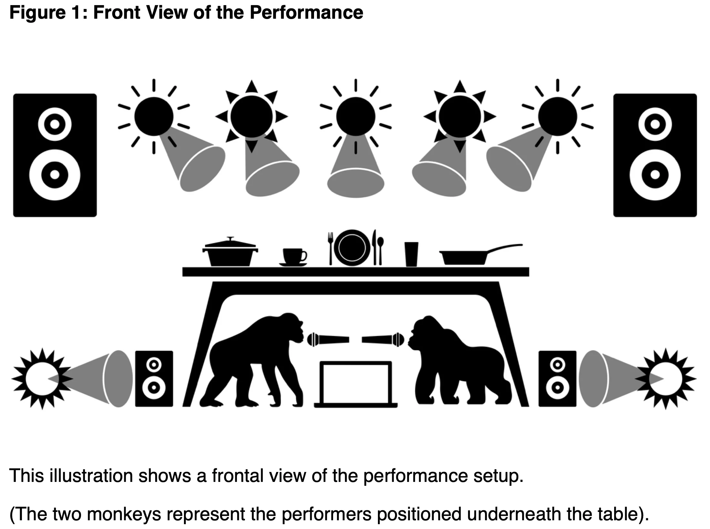
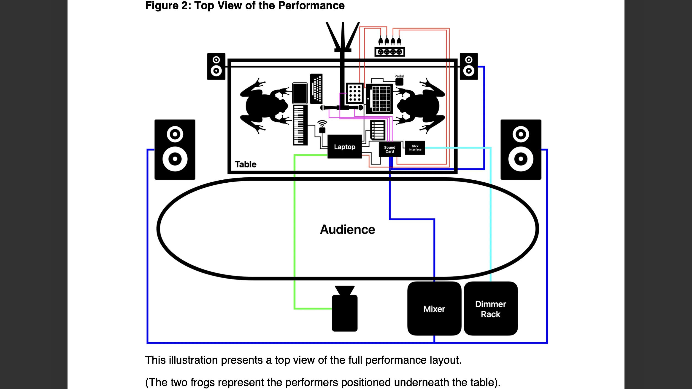
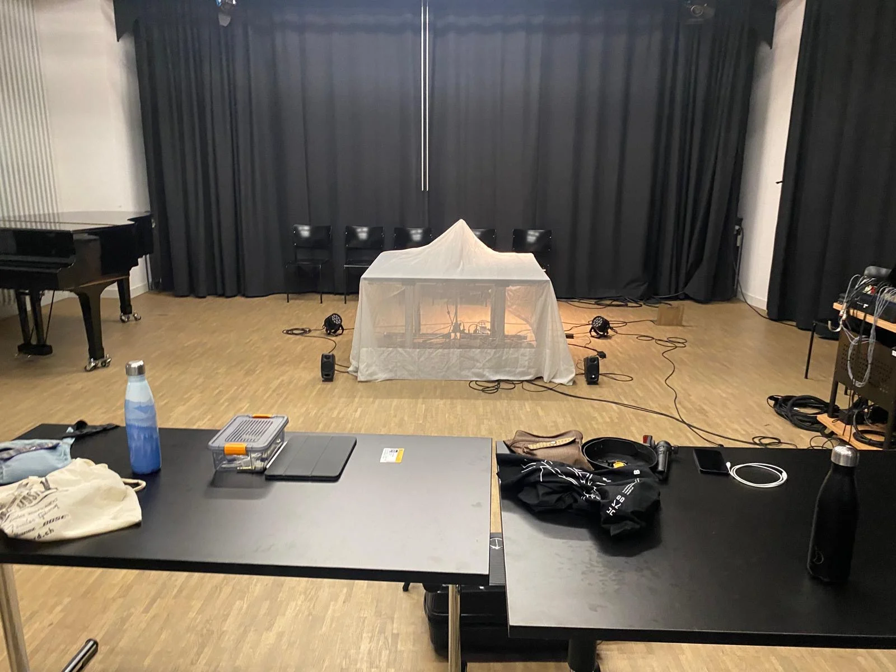
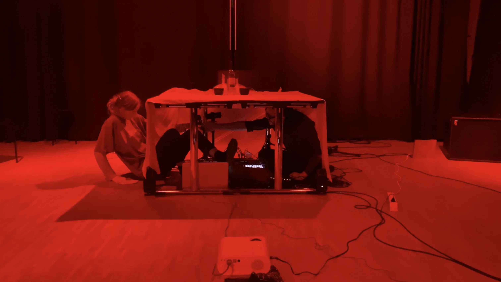
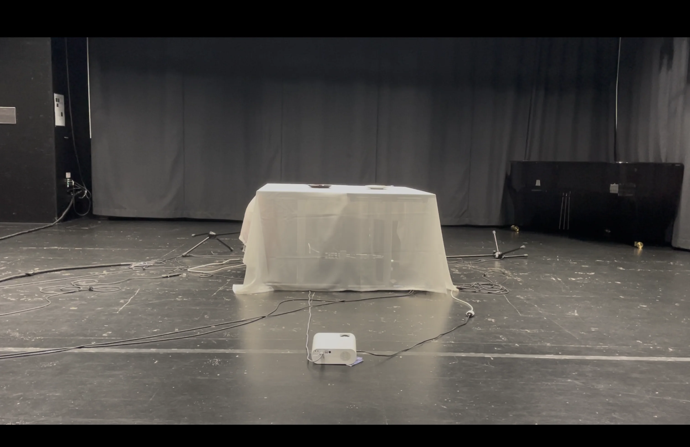
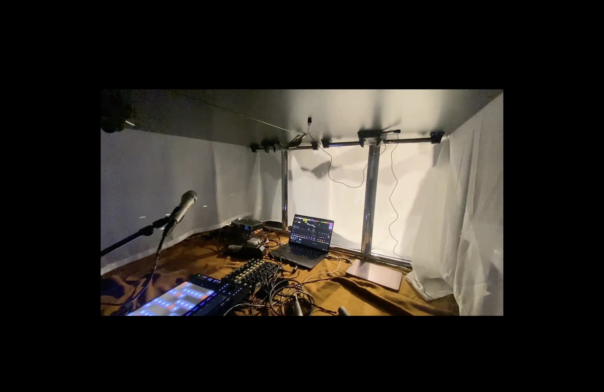
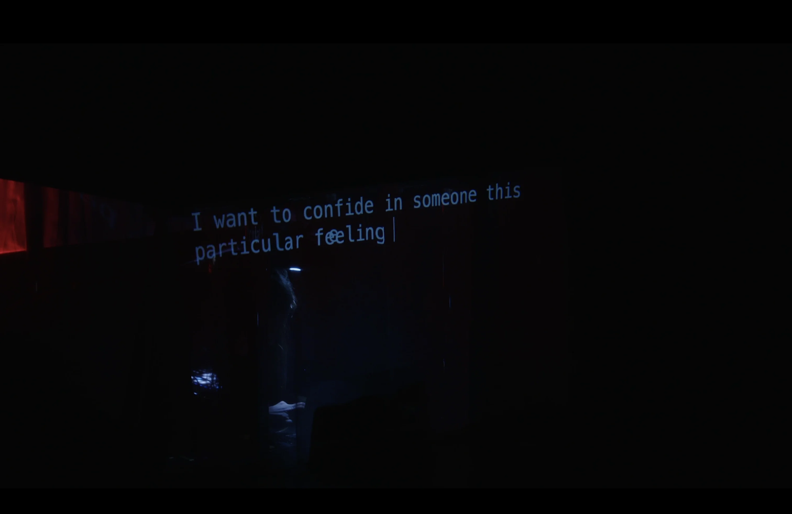

— About
Séismes is a collaborative work by Julie Brice and Jorge Care inspired by the seismic history of Chile following the 1960 Valdivia earthquake. The piece is structured around three major events: Valdivia (1960), Algarrobo (1985), and Cauquenes (2010), whose approximate 25-year intervals shape its dramaturgical arc.
The performance takes place entirely beneath a table, referencing a gesture deeply embedded in Chilean culture: seeking shelter under a table during an earthquake. This act of protection becomes the central scenic and symbolic framework of the work.
The setup integrates two voices, live electronics, light, and video, all controlled from a single computer. Each performer uses a microphone and contact microphone alongside MIDI controllers and a semi-modular synthesizer. Archival images of the 1960 earthquake are projected onto the tablecloth, transforming it into a fragile surface. In one section, a poem by Ryoichi Wago written during the 2011 Fukushima earthquake is visually manipulated in real time, creating a resonance between distant seismic histories.
In a data-driven segment, real-time seismic information from the day of each performance modulates light and sound parameters, ensuring that every iteration of Séismes is unique. Layers of synthesized short-circuit sounds evoke the sonic memory of infrastructural collapse typical of Chilean earthquakes.







— Video documentation